| はじめての統計データ分析 |
| はじめての統計データ分析 |
| 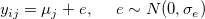 | (5.36) |
人種など構成比率が分かっているなど特別な場合を除いては、単純平均として生成。
| 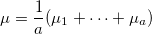 | (5.8) |
母数は 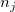 を含んで定義されるものではないから、 に比例した重みづけ平均を取る必要はない。
| 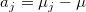 | (5.9) |
全水準の合計はゼロとなる。
水準の効果 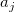 が誤差変数 と独立であるとすると、
| 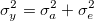 | (5.13) |
と分解できる。
| 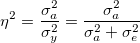 | (5.15) |
| 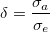 | (5.16) |
研究仮説「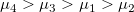」が正しい確率は、生成量
| 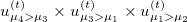 | (5.19) |
のEAPで評価できる。
研究仮説「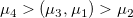」が正しい確率は、生成量
| 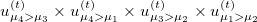 | (5.20) |
のEAPで評価できる1。
2群のデータだけ用いて再分析しないこと。ベイズ統計学は、データの2度使いをしない。
全データを使って求めた 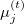 と 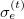 から、効果量、非重複度、優越率、閾上値を算出する。
| 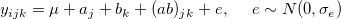 | (5.26) |
ただし、
| 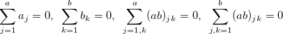 | (5.27) |
とする。 結局、 が1つ、が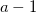個、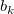が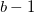個、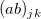 が 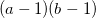 個、が1個（合計 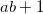 個）の母数が推測される。
が1つ、が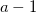個、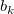が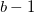個、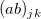 が 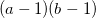 個、が1個（合計 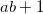 個）の母数が推測される。
例えば 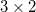 の2要因の場合、以下の母数（セル平均ではないので注意）のうち太字の部分以外は推測されない。
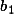 |
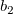 |
|
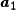 |
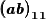 |
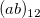 |
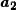 |
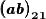 |
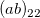 |
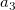 |
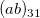 |
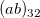 |
それ以外の母数については、
| 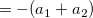 | ||||
 |
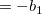 | |||
 |
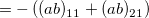 | |||
| 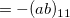 | ||||
| 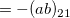 | ||||
| 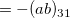 |
に対応する生成量を算出することで評価する。
1要因のときと同様、
| 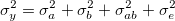 | (5.39) |
と分解できるとする。 ただし、
| 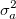 | 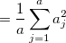 | |||
| 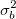 | 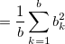 | (5.40) | ||
| 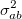 | 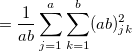 | (5.41) |
である。
| 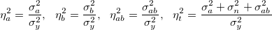 | (5.42) |
| 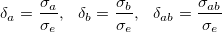 | (5.43) |
生成量
| 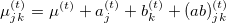 | (5.44) |
によって、近似する。
セル平均と誤差SDの生成量（ と ）を利用して、平均の差、効果量、非重複度、優越率、閾上率を算出する。
x1 <- c(05.02, 06.67, 08.17, 02.79, 08.13, 06.34, 06.32, 03.97); n1 <- length(x1)
x2 <- c(09.89, 09.58, 11.20, 09.05, 12.33, 09.39, 10.88, 09.37, 17.40); n2 <- length(x2)
x3 <- c(10.20, 07.29, 07.57, 03.42, 05.82, 10.92, 05.21, 13.47, 08.64, 06.05); n3 <- length(x3)
data01 <- list(n1=n1,n2=n2,n3=n3,x1=x1,x2=x2,x3=x3)
stancode <- '
data{
int<lower=0> n1;
int<lower=0> n2;
int<lower=0> n3;
real x1[n1];
real x2[n2];
real x3[n3];
}
parameters{
real mu1;
real mu2;
real mu3;
real<lower=0> sigma;
}
model{
x1~normal(mu1,sigma);
x2~normal(mu2,sigma);
x3~normal(mu3,sigma);
}
'
fit01 <- stan(model_code=stancode,iter=10000,warmup=1000,chains=4,data=data01)
print(fit01,digits_summary=3)
mean se_mean sd 2.5% 25% 50% 75% 97.5% n_eff Rhat
mu1 5.925 0.005 0.988 3.971 5.286 5.935 6.561 7.901 36000 1
mu2 11.009 0.005 0.923 9.205 10.411 11.004 11.608 12.850 36000 1
mu3 7.855 0.005 0.871 6.124 7.281 7.858 8.429 9.572 36000 1
sigma 2.744 0.002 0.426 2.067 2.442 2.694 2.987 3.728 30738 1
lp__ -38.935 0.012 1.533 -42.858 -39.685 -38.593 -37.809 -37.025 15096 1
A <- c(rep(1,49),rep(2,49))
B <- c(rep(1,10),rep(2,8),rep(3,7),rep(4,9),rep(5,8),rep(6,7),
rep(1,10),rep(2,8),rep(3,7),rep(4,9),rep(5,8),rep(6,7))
y <- c(140,146,149,136,147,147,143,143,143,141,
139,136,136,140,135,132,140,134,
123,127,131,130,138,128,129,
115,120,118,118,121,124,129,119,128,
128,124,123,121,122,126,131,122,
121,121,120,116,117,113,118,
143,141,142,145,149,145,143,141,142,155,
138,134,142,136,135,136,131,133,
131,128,128,128,127,130,130,
117,125,132,122,119,122,129,117,127,
117,120,124,122,122,122,118,122,
119,125,122,116,119,113,122)
a <- length(unique(A))
b <- length(unique(B))
N <- length(y)
data01 <- list(y=y,A=A,B=B,a=a,b=b,N=N)
stancode <- '
data{
int<lower=1> N; int<lower=1> A[N]; int<lower=1> B[N];
vector<lower=0>[N] y; int<lower=2> a; int<lower=2> b;
}
parameters{
real mu;
vector[a-1] ef_a; vector[b-1] ef_b; matrix[a-1,b-1] ef_ab;
real<lower=0> sigma;
}
transformed parameters{
vector[a] ef_a_all; vector[b] ef_b_all; matrix[a,b] ef_ab_all; // 主効果と交互作用全体
for(k in 1:(b-1)){ ef_a_all[k] = ef_a[k];} ef_a_all[b] = -sum(ef_a);
for(j in 1:(a-1)){ ef_b_all[j] = ef_b[j];} ef_b_all[a] = -sum(ef_b);
for(j in 1:(a-1)){ for(k in 1:(b-1)){ ef_ab_all[j,k] = ef_ab[j,k]; }}
for(k in 1:(b-1)){ ef_ab_all[a,k] = -sum(col(ef_ab,k)); }
for(j in 1:(a-1)){ ef_ab_all[j,b] = -sum(row(ef_ab,j)); }
ef_ab_all[a,b] = -sum(sub_row(ef_ab_all,a,1,b-1));
}
model{
for(i in 1:N){
y[i]~normal(mu+ef_a_all[A[i]]+ef_b_all[B[i]]+ef_ab_all[A[i],B[i]],sigma);
}
}
'
fit01 <- stan(model_code=stancode,iter=10000,warmup=1000,chains=4,data=data01)
print(fit01,digits_summary=3)
Footnotes
| はじめての統計データ分析 |